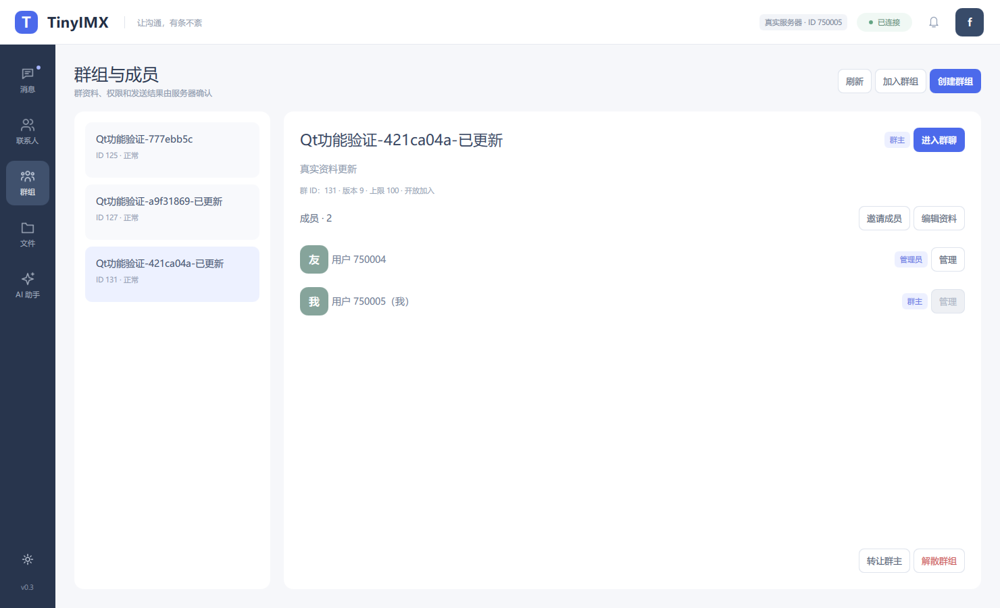
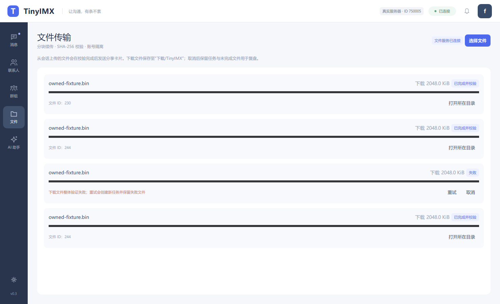
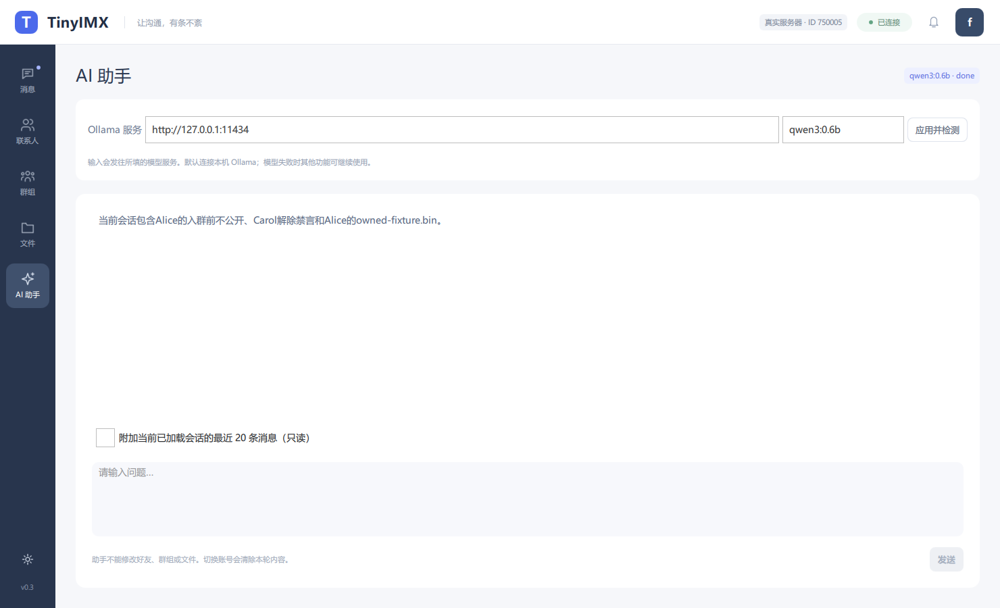

消息状态可追踪
区分持久化、接收确认与已读。CID 幂等、MID 去重和离线恢复覆盖重复提交与网络重连。
同步提交 · 持久事件 · 恢复核验8 vCPU / 16 GiB 单机完整部署。
两档业务负载，逐条核对真实持久状态。
| 业务消息速率 | 完整成功 / 300 秒 | ACK 平均 | ACK P99 | 128 B 正文吞吐 |
|---|---|---|---|---|
| 1,000 条/s | 300,000 / 300,000 | 9.258 ms | 48.573 ms | 128 KB/s · 1.024 Mbit/s |
| 1,250 条/s | 375,000 / 375,000 | 13.290 ms | 60.553 ms | 160 KB/s · 1.280 Mbit/s |
原生私聊同步 WAL、RocketMQ LOCAL 同步刷盘、真实投影与接收确认。全窗口包含首分钟；双 Gateway 均衡承载，每对私聊位于同一 Gateway。Windows 发压端与虚拟机共用物理宿主机。正文吞吐按单份消息计算。
阅读实测报告与 QPS 计算 →会话、成员、文件与 AI 各有清晰的位置，
需要的功能始终触手可及。
会话列表、私聊、群消息与授权附件，在同一工作区连续完成。

成员管理、邀请、禁言和转让由服务端检查，群历史遵循成员与快照授权。

独立传输通道连接任务面板和附件卡片，分块校验与整体终验共同守住完整性。

流式问答、停止生成和可选会话片段；模型响应与实时聊天各自运行。
以上为保存的真实服务联调截图，账号、群名、消息与附件均使用专用演示数据。
网络、存储、业务权限与原生交互互相配合，
把可靠性落实到具体流程。
区分持久化、接收确认与已读。CID 幂等、MID 去重和离线恢复覆盖重复提交与网络重连。
同步提交 · 持久事件 · 恢复核验epoll / Reactor 承载长连接；跨线程任务、有界执行与会话顺序共同管理消息处理。
双 GATEWAY · SESSIONEPOCH好友关系、群成员、历史快照和文件接收者各自校验，客户端入口与最终权限保持分工。
权威校验 · 历史 ACL · 身份派生独立文件通道处理分块任务、取消和恢复；SHA-256 校验内容，HMAC 绑定授权接收者。
分块终验 · 上传状态机客户端连接本地 Ollama；后端另提供 8 个只读 MCP 工具，复用现有身份与业务权限读取资料。
流式回答 · 有界读取 · 权限复用版本、配置、负载和完整分母一起保存；改动经过业务、持久状态及故障恢复核验再进入性能实验。
实验取舍 · 独立核验 · 迭代留档五个 gRPC 业务域连接网络与业务。可选原生私聊配置将消息、索引和待发布事件原子同步提交，后台通过真实 MQ 更新未读投影。
了解产品与架构 →测试条件与结果相连，
工程取舍与具体改动相连。
按连接数、报文、速率与持续时间记录完整成功、延迟、CPU、后台积压及恢复状态。本次固定发布 50K 用户下 1,000 与 1,250 条/s 两档完整结果。
查看容量与测试条件 →问题、源码改动、单因素实验、采用或否决原因及证据逐项对应。保留完整业务，记录优化为什么有效。
阅读工程复盘 →